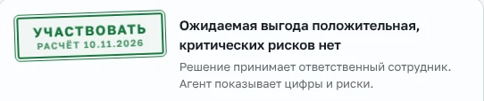
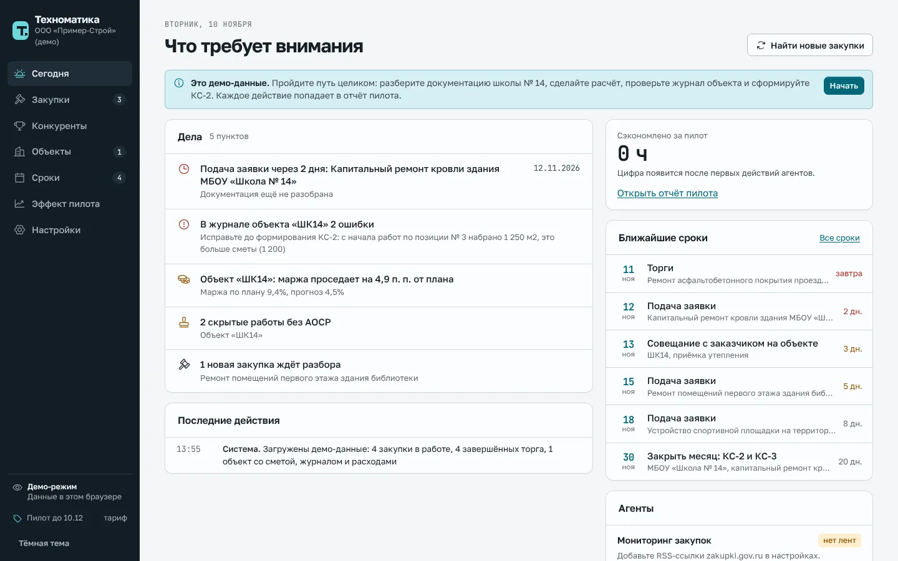
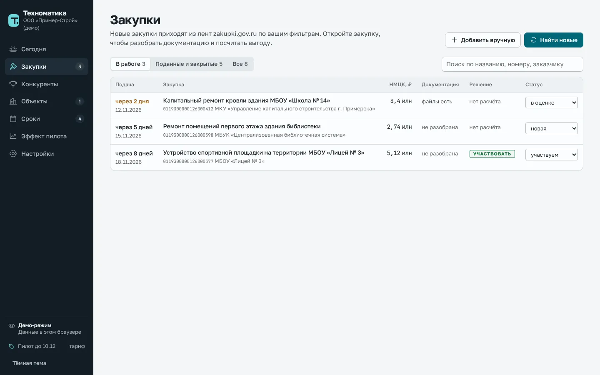
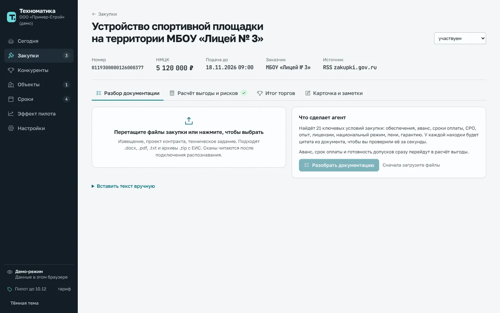
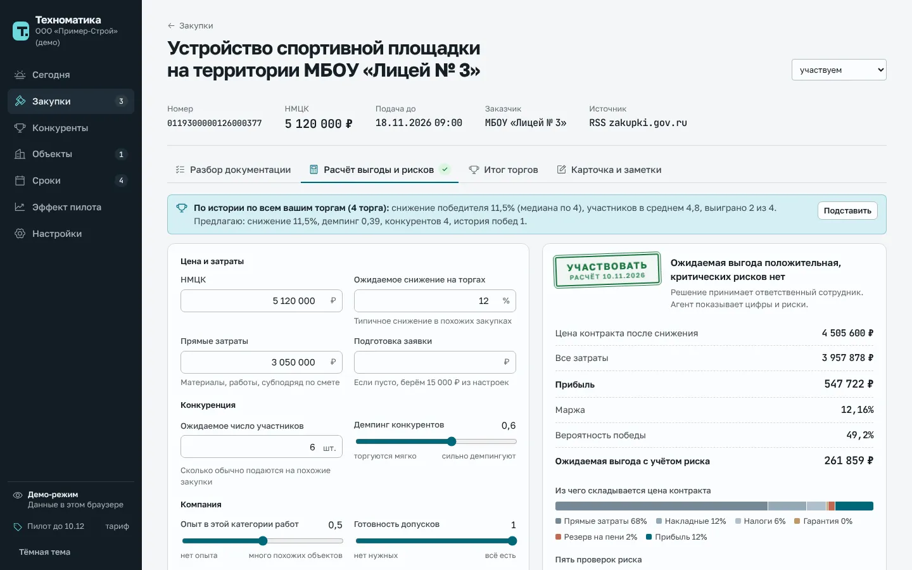
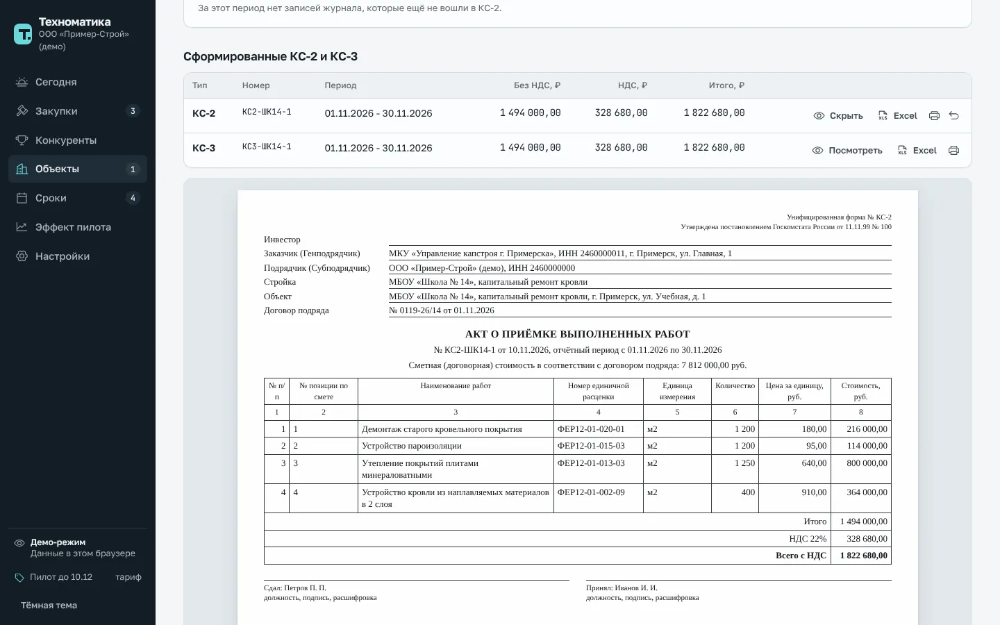
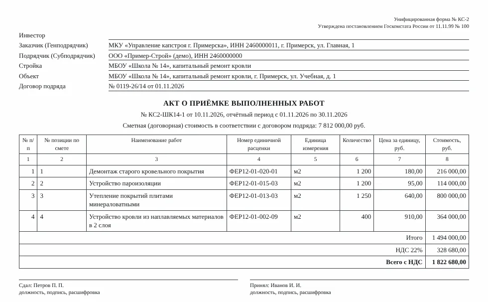
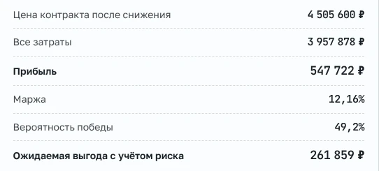
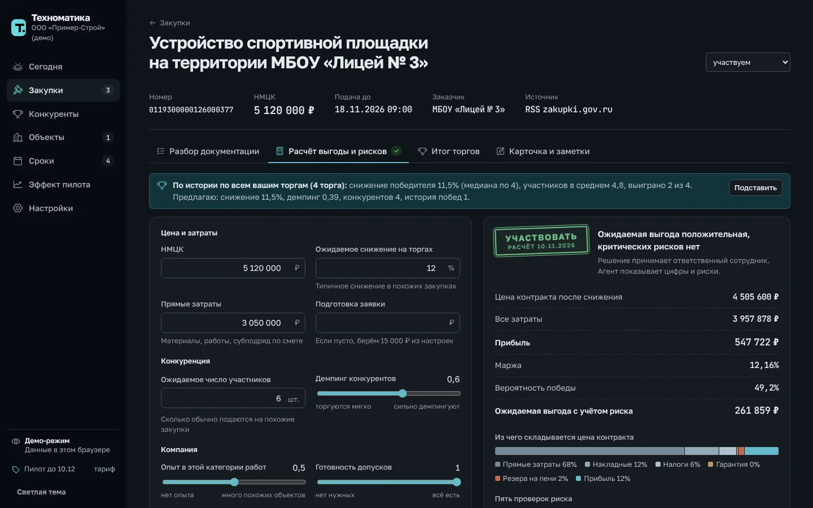

Вердикт выглядит как штамп
Итог расчёта стоит на странице как отметка на документе. Это результат, а не ещё одна кнопка.
Свой продукт, 2026
Четыре агента находят закупки, разбирают документацию, считают выгоду и собирают КС-2. Решение остаётся за инженером.

В небольшой строительной компании тендеры и ПТО ведут два или три человека. Они вручную ищут закупки, читают документацию, считают маржу в Excel и набирают акты. Ошибка в любом звене стоит денег: проигранные торги или контракт в минус.
Техноматика собирает эту работу в одном окне. Агент готовит черновик, инженер проверяет и подтверждает. Каждое число раскрывается: видно, из чего оно сложилось и на какой странице документа найдено.





Итог расчёта стоит на странице как отметка на документе. Это результат, а не ещё одна кнопка.

Инженер проверяет документ в том виде, в каком его подпишут: унифицированная форма, а не таблица на экране.

Числа набраны моноширинным шрифтом и выровнены по правому краю, как в смете.

Роли цветов те же: акцент, норма, внимание и риск читаются одинаково в обеих темах.
Зелёный, янтарный и красный заняты статусами и больше нигде не используются. Поэтому красное на экране всегда значит одно: здесь риск.
Golos Text
1 822 680,00 ₽
Текст набран шрифтом Golos Text, числа и номера закупок шрифтом JetBrains Mono.
Это демо на вымышленных данных. Клиентов и измеренного эффекта пока нет, и в кейсе нет цифр «было и стало». Следующий шаг: пилот в строительных компаниях и замер времени на каждую операцию.